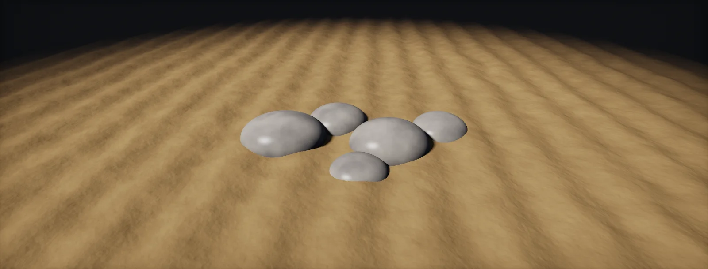

Blend Modes
What the Blend node computes: copy, add, subtract, multiply, divide, max and min, add-sub, screen and overlay as formulas, with opacity and masks, clamping, and how to blend whole materials by height.

Blend node
Most of a Substance graph is images being combined, and most combining happens in one atomic node: Blend. It has three inputs. The Foreground (F) is laid on top of the Background (B), and the optional Opacity input is a greyscale mask that says where. The Opacity slider scales the mask, and the Blending Mode decides how F and B are combined.
Every mode works the same way, one pixel and one channel at a time: compute the mode's result from F and B, then mix it with the untouched background by opacity × mask. With opacity 0 you get B, with opacity 1 the full effect:
The square shows the mode for every pair of values at once: foreground left to right, background bottom to top. Learn to read it and the modes stop being names. Multiply is dark wherever either input is dark; Max is a corner of light; Copy ignores the background completely.
Add, subtract, multiply, divide
- Add (linear dodge): B + F. Brightens. Two bright areas sum past 1.
- Subtract: B − F. Carves the foreground out of the background, for example cracks out of a height map. Below 0 becomes black.
- Multiply: B · F. Never brighter than either input. With a 0–1 mask as F, it keeps B where the mask is white and removes it where black: the standard way to apply a mask.
- Divide: B / F. Rarely needed; it brightens and explodes near F = 0.
Two details catch everyone. First, in the integer formats every result is clamped to 0–1 before the next node sees it, so Add saturates and Subtract bottoms out (integer versus float). Second, order matters: Add, Multiply, Max, Min and Screen give the same result with the inputs swapped, but Subtract, Divide, Copy and Overlay do not. If a subtraction does nothing, swap the inputs.
Max and Min
Height maps describe surfaces, and the question when combining two of them is usually "which one is on top here?". That is exactly what Max (Lighten) answers: at each pixel the higher surface wins. Two stones blended with Max overlap like real stones, with no seam and nothing above 1. Min (Darken) keeps the lower surface and is useful for cutting a shape down to another, an intersection.
The same idea is behind signed distance fields in shaders, where the union of two shapes is the minimum of their distances. In heights it is the maximum, because higher means more surface.
Add Sub and Overlay
Detail such as noise, scratches or pores usually comes as an image centred on mid grey: 0.5 means "no change", lighter raises, darker lowers. Add and Multiply cannot use such an image without shifting the whole surface, because they only ever raise or only ever lower. Two modes treat 0.5 as neutral:
- Add Sub: foreground values above 0.5 are added to the background, values below 0.5 subtracted. The large shape keeps its average height.
- Overlay: multiplies where the background is below 0.5 and screens where it is above. The detail is strongest in the middle tones and fades towards black and white.
Adobe documents Add Sub in words only. The formula used here, B + (F − 0.5), follows community references; the test graph in the last chapter lets you compare it with your Designer version.
Control the strength with the Blend's opacity, not by scaling the detail image: opacity keeps 0.5 neutral, while a Levels on the detail shifts its centre unless you remap around 0.5.
Screen and colour blends
Screen is multiply turned upside down: invert both inputs, multiply, invert the result, 1 − (1 − B)(1 − F). It brightens without ever passing 1, which makes it a gentle way to add highlights, dust or edge wear to a colour. Overlay combines the two: it multiplies the darks and screens the lights of the background, adding contrast.
On colour images every mode runs on each channel separately, R with R, G with G, B with B. In Designer's default Legacy colour mode those channels hold sRGB-encoded values, so a colour Blend at 50 % is darker in the middle than a physically correct mix would be (sRGB and linear in Designer). For base colour work this usually looks fine and matches what painters expect from Photoshop; just do not expect a Multiply of two colours to behave like light.
Colour images also carry alpha. In Copy mode the foreground's alpha is multiplied into the opacity by default, and the Blend node's Alpha Blending setting changes how alpha is treated.
One mode is about speed rather than looks. Switch behaves like Copy, but at opacity exactly 0 Designer does not compute the foreground chain at all, and at exactly 1 it skips the background. Driven by an exposed on/off parameter, it makes optional features free when they are off (graph structure).
Blend masks
The Opacity input is where most of the art direction happens. A mask is usually made from something already in the graph: the height (moss in the low parts), its slope (dust on flat tops), a curvature map (wear on edges) or an ambient occlusion map (dirt in crevices). The tool that turns any of them into a mask is a threshold with a soft edge: below a value, 0; above it, 1; a short ramp between. Histogram Scan does this with a Position and a Contrast, and Levels does it with its input range:
Two habits keep masks clean. Remap first and blur second: a small blur after the threshold softens stair-stepped edges without moving them. And keep masks greyscale and 8 bit; they rarely need more (formats per map).
Height blending
When two materials meet (cobbles in sand, moss on stone), a mask painted from the top looks flat: the sand line ignores the stones. Real material sits in the low parts. A height blend compares the two height maps at every pixel and shows whichever material is higher there. A height offset moves one material up or down, which floods the other one from the low parts outward, and a contrast value controls how sharp the transition is:
Designer's Height Blend library node does this and outputs both the combined height and the mask; the formula above shows the idea, the node's exact maths differs in detail. Use the mask to blend every other map of the two materials with Copy mode (colour, roughness, normals), or use the Material Blend node, which blends whole sets of PBR outputs at once.
The same comparison works in a shader at runtime, for puddles or snow that change with gameplay. The next chapter builds it in Shader Graph.
Set it up in Designer and Unity HDRP
Two halves. In Designer, a small test graph shows every mode on two gradients, the same square as the first chapter's widget, so you can check what a mode does in your version. In Unity HDRP, the same formulas as a Custom Function, used to height-blend two materials at runtime, for puddles, moss or snow that gameplay controls. Written for Substance 3D Designer 14 and later, Unity 6 with HDRP 17 and the Substance 3D for Unity plugin; menu names can differ slightly between versions.
- In Designer, create a graph and add two Gradient Linear 1 nodes. Rotate the second by 90° with its own rotation setting or a Transformation 2D. You now have F rising left to right and B rising bottom to top.
- Add a Blend node: the first gradient into Foreground, the second into Background. Step through the Blending Mode list and compare the 2D view with the square in the first chapter. Set the graph format to 16F or 32F to see results beyond 0–1 that 8 bit would clamp.
- To check Add Sub numerically, put a Uniform Color (greyscale) of 0.2 into Background and 1.0 into Foreground, and read the 2D view's value under the cursor: B + (F − 0.5) gives 0.7.
- In Unity, save
SDBlend.hlslin the project. Create the graph: in the Project window, Create > Shader Graph > HDRP > Lit Shader Graph. Open it and check the Graph Inspector > Graph Settings. Add two sets of material textures as properties (base colour, normal, mask map for each), a Blend float (0–1) and a Contrast float (0.01–0.5). - Sample both materials. The height of each comes from its mask map or a separate height texture; for HDRP mask maps without height, use the blue channel of a custom packed map, or a separate
_Htexture. - Add a Custom Function node with Source
SDBlend.hlsland NameHeightBlendMask. Inputs: HTop (Float), HBottom (Float), Offset (Float), Contrast (Float); output Mask (Float). Connect the Blend property through a Remap from (0, 1) to (−1, 1) into Offset. - Use the mask to Lerp base colour, smoothness, metallic and AO between the two materials. For normals use Lerp and then Normalize (or Normal Blend for detail layering). Connect to the master stack.
- Optionally call
SDBlend(inputs F (Vector 3), B (Vector 3), Opacity (Float), Mode (Float), output Result (Vector 3)) to layer a dirt or wear texture in any mode from the unit, for example Overlay for colour variation. - Put
BlendDriver.cson the object to fade the blend in over time or from a gameplay value (wetness, snow level). It sets the_Blendfloat through a MaterialPropertyBlock, so instances keep one material.
#ifndef ATLAS_SD_BLEND_INCLUDED
#define ATLAS_SD_BLEND_INCLUDED
// Substance-style blend modes, per channel. F = foreground, B = background.
// Mode: 0 Copy, 1 Add, 2 Subtract, 3 Multiply, 4 Divide, 5 Max, 6 Min, 7 Add Sub, 8 Screen, 9 Overlay.
// The result is clamped to 0..1 like Designer's integer formats, then mixed by Opacity.
float3 SDBlendMode(float3 F, float3 B, int mode)
{
float3 r = F;
if (mode == 1) r = B + F;
else if (mode == 2) r = B - F;
else if (mode == 3) r = B * F;
else if (mode == 4) r = B / max(F, 1e-4);
else if (mode == 5) r = max(B, F);
else if (mode == 6) r = min(B, F);
else if (mode == 7) r = B + (F - 0.5);
else if (mode == 8) r = 1.0 - (1.0 - B) * (1.0 - F);
else if (mode == 9) r = lerp(2.0 * B * F, 1.0 - 2.0 * (1.0 - B) * (1.0 - F), step(0.5, B));
return saturate(r);
}
void SDBlend_float(float3 F, float3 B, float Opacity, float Mode, out float3 Result)
{
Result = lerp(B, SDBlendMode(F, B, (int)round(Mode)), saturate(Opacity));
}
// Height blend: 1 where the top material (raised by Offset) is higher than the bottom one.
// Contrast is the width of the transition in height units.
void HeightBlendMask_float(float HTop, float HBottom, float Offset, float Contrast, out float Mask)
{
Mask = saturate(0.5 + (HTop + Offset - HBottom) / max(Contrast, 1e-3));
}
#endifusing UnityEngine;
// Drives the _Blend property of a height-blended material, per renderer, without creating material copies.
[RequireComponent(typeof(Renderer))]
public class BlendDriver : MonoBehaviour
{
[Range(0f, 1f)] public float blend = 0f; // 0: bottom material only, 1: fully flooded with the top one
public float fadeSeconds = 0f; // > 0: animate from the current value towards 'blend'
static readonly int BlendId = Shader.PropertyToID("_Blend");
MaterialPropertyBlock block;
Renderer rend;
float current;
void OnEnable()
{
rend = GetComponent<Renderer>();
block = new MaterialPropertyBlock();
current = blend;
Apply();
}
void Update()
{
if (Mathf.Approximately(current, blend)) return;
current = fadeSeconds > 0f ? Mathf.MoveTowards(current, blend, Time.deltaTime / fadeSeconds) : blend;
Apply();
}
void Apply()
{
rend.GetPropertyBlock(block);
block.SetFloat(BlendId, current);
rend.SetPropertyBlock(block);
}
}MaterialPropertyBlocks keep one material for many objects, but in HDRP and URP they take a renderer out of the SRP Batcher. For many objects, prefer a per-instance value from a texture or vertex colour, or accept separate materials (draw calls and batching).
Sources and further reading
The formulas and engine details in this unit come from these references. Engine documentation changes between versions.
- DocsBlending modes descriptionAdobeEvery mode of the Blend node, including Switch and Add Sub.
- DocsBlend (atomic node)AdobeInputs, opacity and alpha blending parameters.
- Video seriesMastering blending modesAdobeEight modes applied to masks and height maps.
- SpecCompositing and Blending Level 1: blend modesW3CReference formulas for multiply, screen, overlay and soft light.